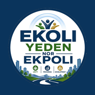

Preserving Our Past. Celebrating Our Present. Building Our Future.
The permanent digital home and heritage archive of Ekoli-Yeden, a community in Yakurr Local Government Area, Cross River State, Nigeria. It preserves the community's history, culture, language, traditional leadership, notable people, festivals including the Lekoli Boku New Yam Festival, photographs, videos and community life.
